Says what went wrong
A command that failed tells in a banner over the diff, with git's reason, Details and Copy, in place of a dialog in the way. It stays until you close it. A push or pull that went through shows in green and goes away on its own.
All features
What only Gittan has, what is new this autumn, and the whole workflow, the diff and the history, with the screenshots. Then how to build it yourself.
Only here
Most of what Gittan does, every git client does. These things I have not found in TortoiseGit, SourceTree, Fork, GitKraken, Tower or the git views of the IDEs, as far as I have looked. If you know one that has it, tell me and I will take the line out.
Hover a change and press Put into Its Commit: Gittan finds the commit of your branch that last wrote those lines, asks, and folds the change into it. Commit > Put Changes into Their Commits… does it for everything at once, each change with its commit, or why it cannot be placed. The round of small fixes after a review ends up in the commits they fix, not in a “fixes” commit on top. Pushed commits are never rewritten, and Branch > Undo takes it back. The command line has git absorb for this; no client I know has it.
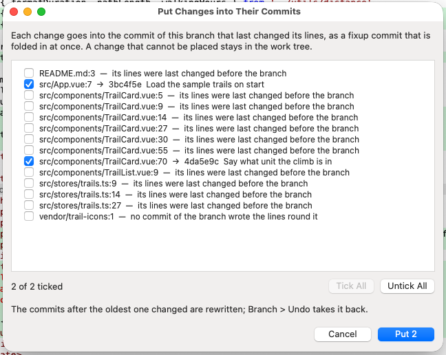
The row that says your branch is behind main also says whether merging main would go through: “merges cleanly”, or “conflicts in TrailList.vue”, worked out in memory before you press Merge or Rebase. Nothing in the work tree is touched to find out. Needs git 2.38 or later.
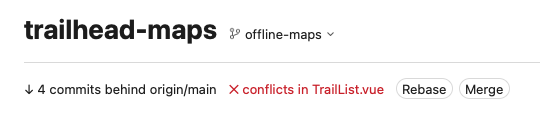
View > Project reads the project the way its own tools do, for Lazarus, Node, Rust, Go and Python, and compares it with the newest tag: each dependency with the version asked for, the version the lock file resolved, and what changed since the tag, added, removed or 3.5.13 → 3.5.17. A Lazarus project shows its build modes with a Build button each, and where every package comes from: a package file in the repository, a submodule at a tag, Lazarus itself, or nowhere. Under it are the mistakes that end up in commits, such as a session file, build output or a virtual environment, each with a button that ignores it.
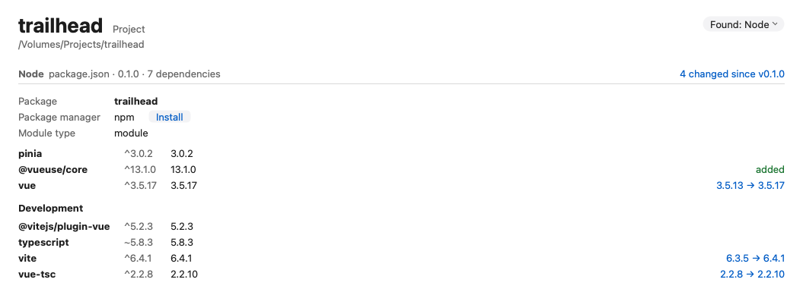
Go > Time-lapse plays a file through every version it has had, oldest first, the lines each commit brought in lit up, with a track to scrub. A file's history as a film rather than a list. See it
Go > Code History lays the earlier versions of the selected lines, or of the function the caret is in, under them, one color per commit, the changed words shaded. The past of a function, read top to bottom in place. See it
A change you have read and accepted gets Reviewed and turns into plain code for the rest of the session, so the diff shrinks to what you have not looked at yet. The file and git are not touched; a long review is worked through like a checklist.
Branch > Undo takes back a commit, an amend, a merge, a reset, a rebase, a switch, a deleted or renamed branch, named after what it was (“Undo Merge feature/x”), and Redo does it again. It follows what git did in a terminal too.
Gittan never says “staged”. A commit takes the files you ticked, whole, as the diff shows them, and a change or a few lines can be left out and stay in the file. The index still exists for git's sake; you do not have to know.
The graph filters as you type: author:, since:, path:, and change: for the commits that added or removed a text or matched a /regex/, which is git log -S and -G with a text field. See it
The gap rows of a diff name the function the next change is in. Go > Changed Symbols lists the functions a diff touched, Callers of Changed Symbols who calls them, and F12 goes to a definition, with no IDE and no language server.
Turn it on and pick Claude Code or GitHub Copilot: Gittan runs the tool you are signed into, with no account of its own. A review comes back as cards under the lines, beside a pull request's comments, with a Fix button on each. The agent gets no tool that writes or goes to the network. See it
View > Preview draws the file beside its diff with the changed parts marked on the drawn page, and no browser engine inside. A .po file shows as originals and translations row by row, a changed image as two pictures at one scale. See it
Small things. Scroll past the end of a file and the next changed file is pulled in. Git flow without the git-flow command, on the same config it writes. A Git LFS file shown as the file, not the pointer, with its locks. Several gh accounts, switched from the settings. A branch's worktrees as tabs. Extensions that can stop a commit, a push or a pull with a reason, more below. Native on macOS, Windows (x64 and Arm), Linux (x64 and Raspberry Pi) and Haiku, from one code base.
What's new
Gittan has grown a lot this autumn. These are the larger additions, the newest first; the tour and the workflow below show most of them in place.
With the AI features on, AI > Summarize Changes, or ✦ Summarize at the top right of the summary, has the agent say what the changes shown amount to: the commits since what you compare with, or what is not committed yet. The answer stays in a panel over the window, with Copy, and each commit it names is a link to it. The AI menu holds every AI feature in one place. See it
On Windows and Linux, Alt or F10 shows a menu bar at the top of the window, as in Firefox: Left and Right move between the menus, and Alt with a letter opens that menu at once. It goes again when you are done, or View > Menu Bar keeps it shown.
On Haiku, pkgman install takes Gittan as a package that brings Qt 6 and git with it and puts Gittan in the Deskbar menu. FreeBSD 15.1 or later on amd64 has a build of its own, on GTK 3. Download
When a pre-push hook refuses a push, the notice offers Push Without Hooks, for that push alone; Repository > Push Without Hooks does the same. When the hook is Git LFS's, Gittan warns first that the LFS files would not be uploaded.
A shield beside each signed commit in the graph and on its card: verified, bad, or a key not known here, which the card explains. Set up signing with an SSH or GPG key in the Name and Email dialog, Test it first, and trust a key not known here on GitHub's word. See it
Merging a branch asks how, and says how many commits come in: Fast-forward when your branch has none of its own, else Merge Commit, or Squash, which stages the changes for one commit of yours. See it
A changed image side by side, swiped with a divider to drag, as onion skin with an opacity to set, or as the difference, where two images of one size differ. See it
A tab of the GitHub view for work in several repositories at once, with or without GitHub: what is left undone in each, branches whose remote branch is gone, who each one commits as and whether it signs, and maintenance. See it
A change goes into the commit of your branch that last wrote its lines, as git absorb does, without the command: a pill over a block, or Commit > Put Changes into Their Commits… for all of them. See it
View > Project shows what the repository is as a project, for Lazarus, Node, Rust, Go and Python: its dependencies against the lock file and the newest tag, a Lazarus project's build modes and packages, and the files that should not be committed. See it
A repository's own commands are .gittan/commands.toml, and every .toml in .gittan/commands/: a description for the tile, a question before it runs, a line per system, hidden ones. The commands of the project's tools are listed too, grouped by name. See it
Branch > Git Flow sets it up, then starts and finishes features, releases and hotfixes: finishing merges the branch where it belongs, tags a release and deletes the branch. Plain git does it, in the git-flow command's own settings, so the command need not be installed and the two share a repository.
The welcome view keeps your repositories in folders of your own. Drag a recent one in, add every repository in a folder at once, and drag rows to order them. File > Repository List shows it in a tab.
An issue named in a commit's message is a link in its card: #123 opens the issue on GitHub with no setup, and File > Issue Tracker… sets any other tracker, in the bugtraq keys other git clients read too. Add a note to a commit (git notes), and the graph's search finds it.
When your branch is behind main, the row that says so also says whether merging main would go through cleanly, or which files would conflict, before you press Merge or Rebase. Needs git 2.38 or later.
A JavaScript file in the extensions folder adds commands to the menus and the command palette, can stop a commit, a push or a pull with a reason, and puts cards under the lines of the change view. Gittan asks before one may read your repositories, go to the network or run programs. More below.
One window holds several repositories, each in a tab: ⌘T opens one, ⌘1 to ⌘9 pick one, and tabs of folders with the same name are told apart by their parents. Back and Forward (⌘[ and ⌘], chevrons in the title bar) step through what a tab has shown, as a browser does.
⌘P lists every action the menus offer right now. Type a few words in any order, and the ones you used last come first. Undo, Redo, Stash, Pull, Push and New Branch stand beside it as buttons.
The Branch menu takes back what last moved a branch, and does it again: a commit, an amend, a merge, a cherry-pick, a reset, a pull, a rebase, a switch, a branch made, deleted or renamed, whether Gittan or git elsewhere did it.
A conflicted file in three panes, ⌘⇧E: yours and theirs side by side, the result under them, and the base, what both started from, between them when you want it. Tick the lines to keep from either side, one conflict at a time, and Save writes the result.
⌘⌥H plays a file through its history, oldest first, each version with the lines its commit changed marked. Pause, step, or drag the track.
Branch > Worktrees… lists the repository's worktrees and opens one in a tab, and adds, locks, removes and prunes them.
The globe at the top right shows your pull requests on GitHub across every repository, the ones you wrote and the ones waiting for your review, and counts those waiting for you. Each card has its next step as a button, Review or Merge; presets, one Filter menu and a search keep the list short. Approve, ask for changes, comment and merge from Gittan, open a new one with Branch > Create Pull Request…, and switch between your gh accounts. See it
A file in Git LFS shows as the file it stands for, not the pointer, with a Download button for a version not fetched. Who holds which lock is read from the server, and Lock File and Unlock File are on the file menu.
Leave Out of Commit works on the lines you select as well as on whole blocks. commit.template fills the message, and Sign Off and Skip Hooks sit after Amend.
Fixup with the Ticked Files on a commit makes a fixup! commit for it, and Fold It In… rebases it in. Drag a commit onto your branch's row in the graph to merge it.
Still off until you turn it on, and nothing is sent until you ask. Besides Claude Code and GitHub Copilot, it can now be any OpenAI-compatible API with your own key, or a local Ollama, so your code never leaves your computer. Turned on, the agent can also resolve a conflict, split the changes into commits, fix a review finding, explain how a few lines came to be and find where something is.
Workflow
Gittan started as a viewer, and it still puts the diff first. Now the work that follows happens there too. Anything that would throw work away asks first, and nothing gets merged or rebased unless you ask for it.

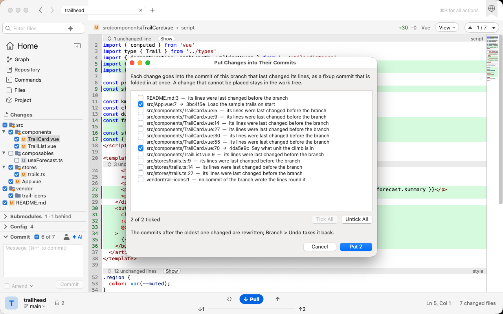

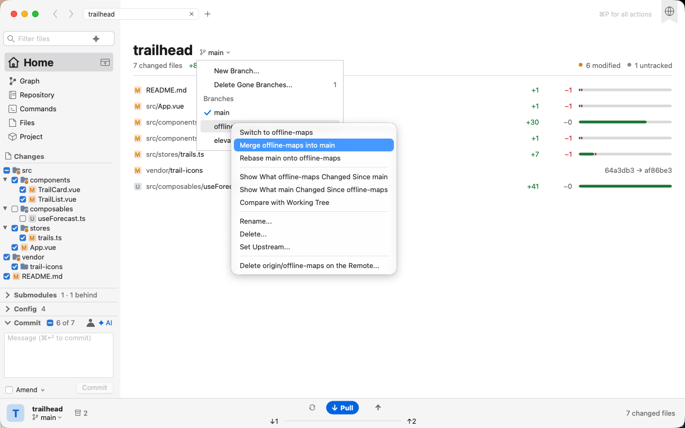
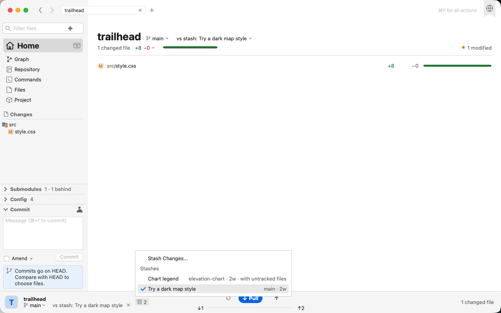
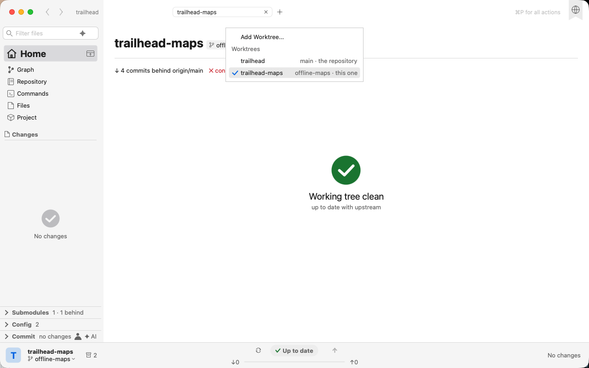
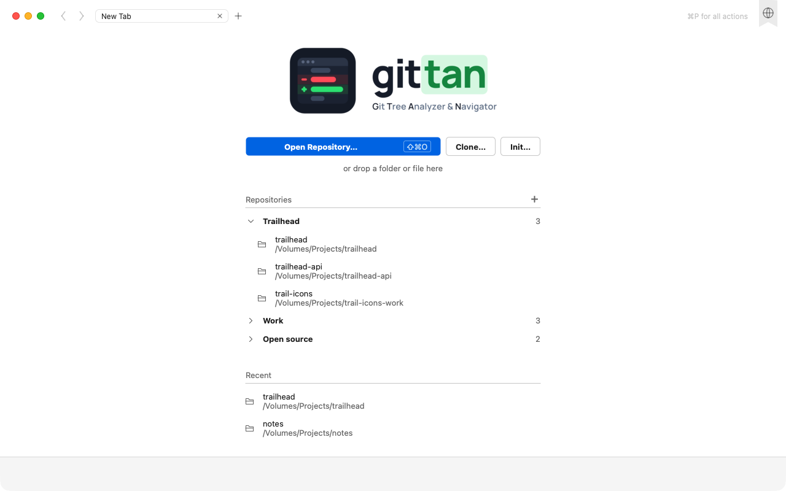
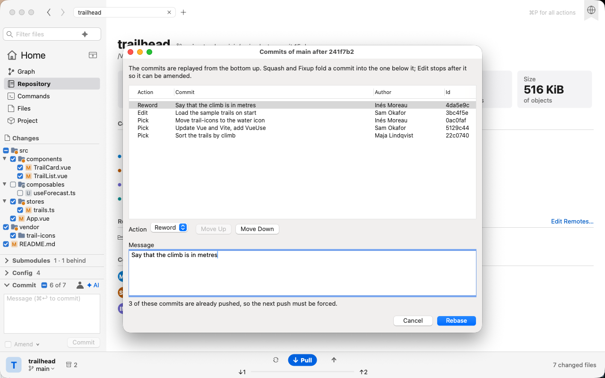
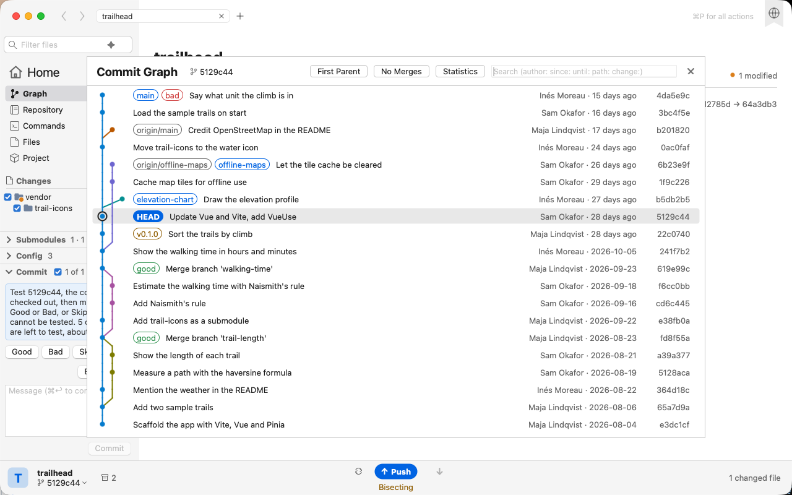
.env.local and a new folder not added yet stay.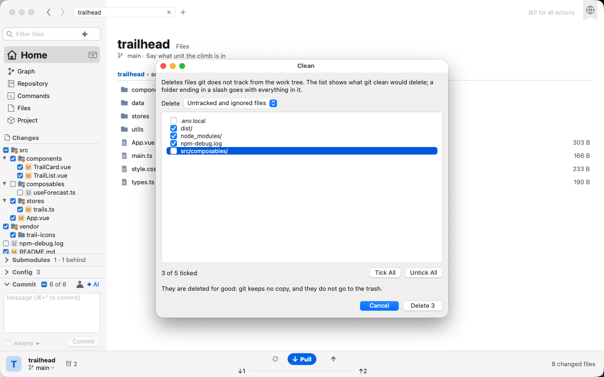
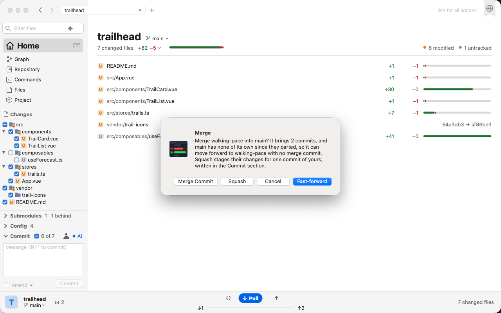
![The GitHub view of maja-lindqvist, 5 open and 3 to review: the presets All 5, Needs me 2, Waiting on others 2 and Ready to merge 1, a Filter menu, Last updated and a search field; cards for #47 Estimate the walking time on descents with a yellow glyph, Waiting for sam-okafor and 1 of 3 checks pending, #42 Cache map tiles for offline use, Approved with 3 checks and a Merge button, #45 Draw the elevation profile with a red glyph and Changes requested, #8 Rate-limit the forecast endpoint in trailhead-api with 1 of 2 checks failing, and the draft #12 Add a bridge icon in trail-icons, each with three dots for its menu](assets/shots/github-light.png)
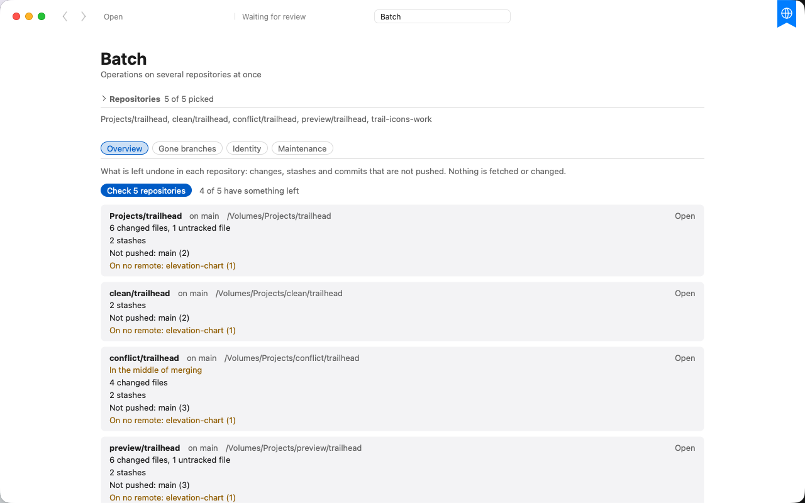
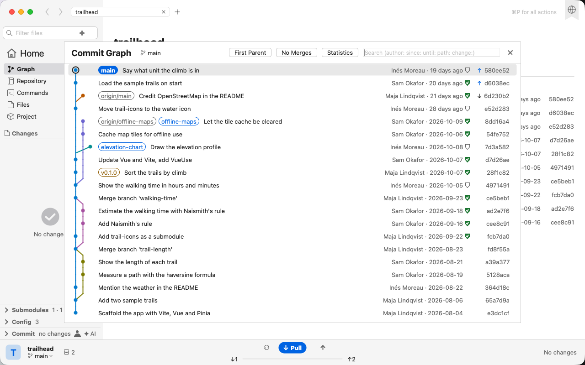
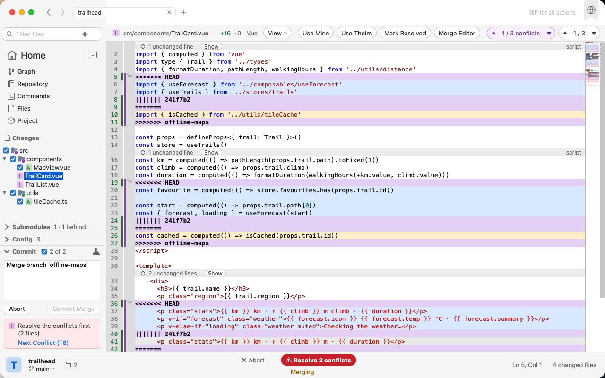

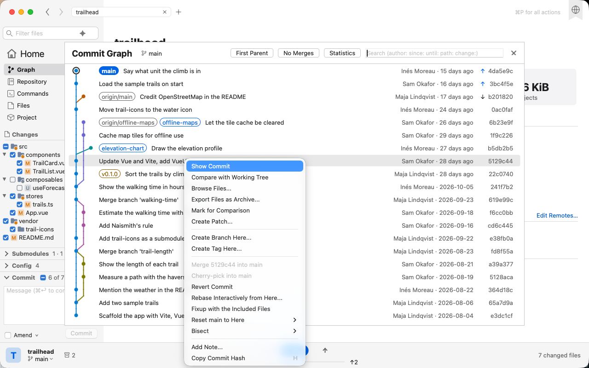
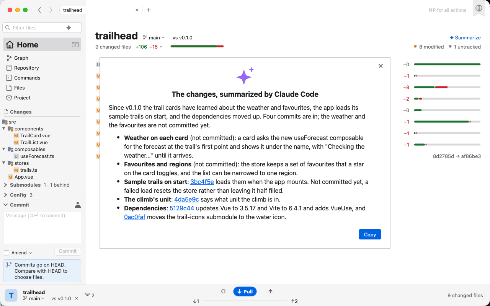
author:, since:, until: and path: narrow it down, change: finds the commits that added or removed a text, and a file's history is a path: search of its own. Here, what Sam changed under src/components.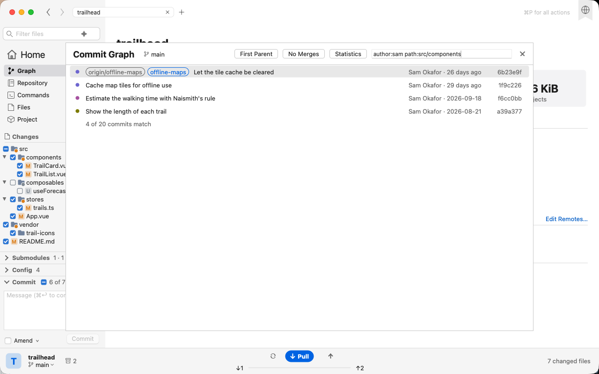
Every changed file in the tree has a check box. Untick what should wait, or leave a block of a file out with Leave Out of Commit, or only the lines you select, write the message at the bottom of the panel and commit with ⌘↩. Files go in as the diff shows them, and your hooks, signing and commit template work as git is set up to. Amend picks up the last message, ✦ AI writes one if you have turned the AI features on, and a branch that can be pushed offers Push right after.
Merge from the branch list or the graph asks how, and says how many commits come in. When your branch has nothing of its own since the two parted, Fast-forward moves it on with no merge commit; Merge Commit keeps the branch's shape; Squash stages everything it brings for one commit of yours, with git's message in the Commit section to edit.
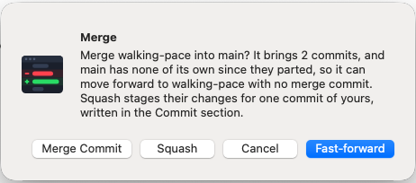
A command that failed tells in a banner over the diff, with git's reason, Details and Copy, in place of a dialog in the way. It stays until you close it. A push or pull that went through shows in green and goes away on its own.
Your side, the base and theirs each get a color. Take one side for a whole file, or one conflict at a time with ⌘⇧R: mine, theirs or both, or pick lines from each in the merge editor with ⌘⇧E. "Mine" is always your own work, in a rebase too. The last one resolved takes you to the next file, then to Commit or Continue.
Right-click a commit to branch or tag from it, merge it, cherry-pick or revert it, or reset to it: soft, mixed or hard, with what each keeps spelled out. Rebase interactively from it, bisect from it, write it as a patch, export its files as a zip or a tar.gz, or add a note to it. Mark one commit and compare another with it.
⌘⌥S stashes the changes, or only the ticked files, untracked ones along. The chip in the status bar lists them with branch and age; pick one to see what it holds, then apply, pop or drop it, or branch from it.
Gittan has no AI of its own, no account and no key. The AI features are off until you turn them on in the settings, and then they use what you bring: Claude Code or GitHub Copilot with your own sign-in, or any OpenAI-compatible API with your own key, OpenAI, OpenRouter or a local Ollama, where nothing leaves your computer. ✦ AI in the Commit section writes the message for the ticked files, Review Changes with AI (⌘⌥R) puts what it finds under the lines it is about, and the agent can resolve a conflict, split the changes into commits, fix a finding, explain how a few lines came to be, or find where something is. Summarize Changes says what the changes shown amount to, in a panel with each commit it names as a link, and the AI menu holds all of these in one place. It may read the repository but gets no tool that writes, runs a command or goes to the network: a fix or a resolution comes back as text that Gittan writes in, and Undo Discard takes it out again. Nothing is sent until you ask.
An extension is one JavaScript file in Gittan's extensions folder (Extensions > Open Extensions Folder). It can add commands to the Extensions menu, the command palette and the file and editor menus, listen when a repository opens or changes and before and after a commit, a push or a pull, and stop one with a reason. It can read the repository's files, diffs, blame and history, run git and other programs, make web requests, and put cards under the lines of the change view, with a settings page of its own. The manifest at the top of the file names what it needs beyond notes, timers and its own storage, and Gittan asks before it loads one that wants to read your repositories, go to the network, run programs or change Gittan's settings. The guide has the whole API, type declarations for your editor and three samples: a commit lint, a shortlog and a push webhook.
⌘⇧L pulls, ⌘⇧P pushes, ⌘⌥F fetches, or use the buttons in the status bar; the open repository is also fetched every ten minutes. A pull only fast-forwards unless your git config says otherwise; a branch that went its own way asks Merge or Rebase, and can remember the answer for the repository. After a rebase, ⌘⌥⇧P force-pushes with a lease, so nobody else's commits are lost. When a pre-push hook refuses a push, the notice offers Push Without Hooks, for that push alone.
⌘B switches, the list makes new ones and cleans up the ones whose remote branch is gone. When local changes stand in the way, Gittan names the files and offers Stash and Switch or Bring Changes Along. Set Upstream pushes a new branch or picks what it tracks.
See what a branch would bring, in either direction, then merge or rebase from that very comparison. A merge asks whether to fast-forward, make a merge commit or squash. Choose Commits… turns it into an interactive rebase. A rebase says first when the next push will have to be forced, and the status bar counts its steps.
Put a file, or every changed file in a folder, back as HEAD has it. Gittan keeps a copy first, so Undo Revert brings your edits back if that was a mistake. Rename or Move and Remove from Git work on the file menu too.
Branch > Tags… lists them newest first. Make one at HEAD or at any commit, check one out, branch from it, push it, export its files as an archive, or delete it here and on the remote.
Write a commit, or every commit between two, as patch files, with a cover letter if you like. Apply Patches… commits mailed patches one by one, or only changes the work tree.
Clone a repository, its submodules too, or make a folder a new one, from the welcome view or the File menu. The Remotes dialog adds, renames and removes remotes and sets their push URLs.
Branch > Reflog… shows where HEAD has been, and marks the commits nothing else reaches any more. Pick one to see it, branch from it or reset back to it.
The diff
The diff is where Gittan starts. It shows the difference between your work tree and any commit, and keeps that view fresh while you edit in whatever editor you like.
A background thread polls the repository every two seconds while Gittan is in front, and every ten behind other windows. Save a file in your editor and the tree, the counts and the diff update on their own.
A commit takes each ticked file as the diff shows it, whatever git add did. Only when git add took part of a file does it say so, with a ringed badge and "partly added with git add" in the header.
Lexers from the CudaText collection, picked by file name. Colors are tuned for both light and dark backgrounds.
A Markdown, HTML or SVG file can be drawn beside its diff as it will look, with no browser engine. The Preview pill in the file header, or ⌘⇧V, turns it on, and it follows the file as it changes.
A changed PNG, JPEG, GIF and the like shows as the two pictures side by side at one scale, or over each other: Swipe with a divider to drag, Onion Skin with an opacity to set, and Difference, which lights up where two images of the same size differ. The header says how many of the pixels changed, and the choice is kept.
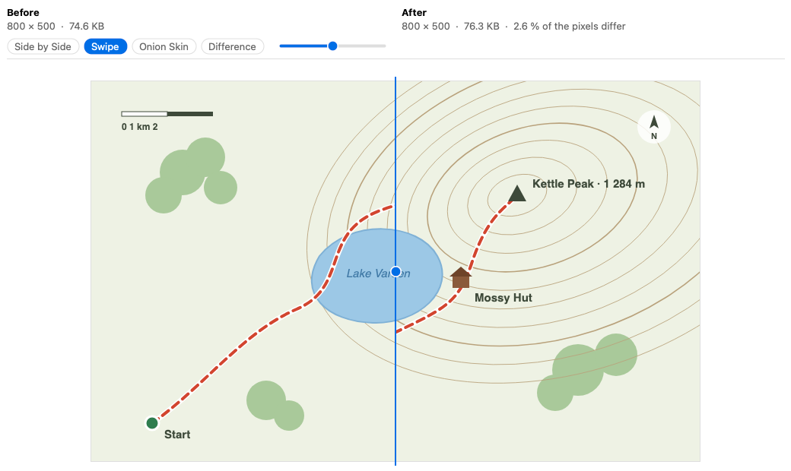
A gettext .po file shows as its originals on the left and its translations on the right, row for row, with the entries that changed marked. ⌘⌥L switches back to the plain text.
Tabs sit in the title bar: beside the traffic lights on macOS, and in Gittan's own title bar with a menu button on Windows and Linux, where Alt or F10 shows a menu bar and View > Menu Bar keeps it shown. The window keeps the system's shadow and rounded corners.
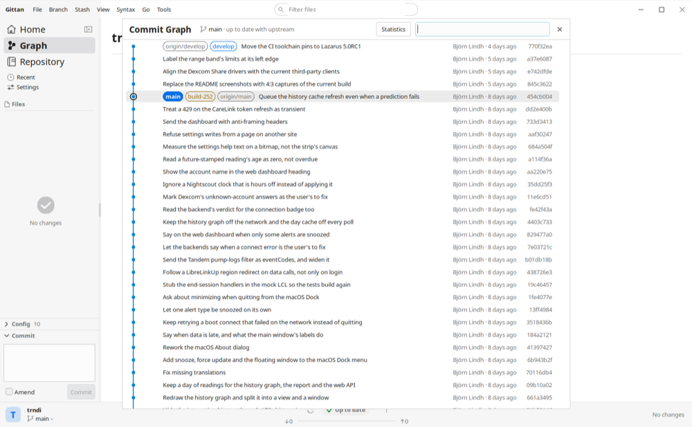
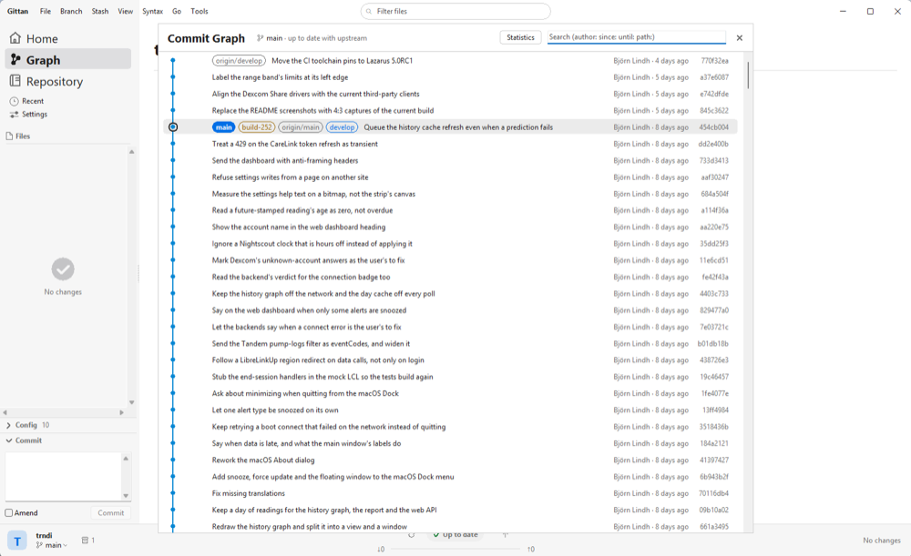
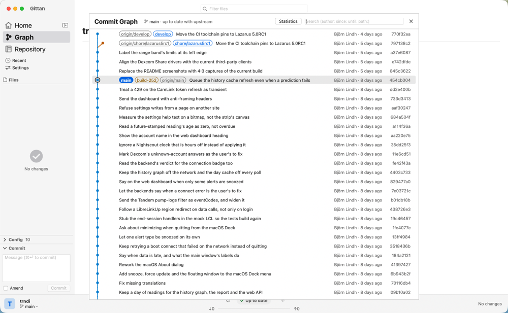
On from the start: only the changed lines show, with 1, 3, 5 or 10 lines of context. Click a gap to open it. Highlighting still covers the whole file, so nothing colors wrong.
Old on the left, new on the right, scrolled in step, each side numbered from its own file. Or a single view with deleted lines kept in place.
Diff against HEAD by default, or pick a branch, a tag, a commit or a snapshot. The tree, the counts and every file diff follow the base you chose.
Follows the desktop theme. On Windows the native tree, menus and dialogs turn dark too, so the whole window matches, not only the editor.
A file opens at its first change. Keep scrolling at the bottom of it and the next one pulls in. Step changes with F7, files with F8, or click a row in the summary.
Right-click a file to copy its path, reveal it in Finder or the file manager, or open it in your editor. ⌘⌥T opens a terminal. Settings (⌘,) has a page for the font, the tab width and the syntax theme, and one for the editor, the terminal, git and gh.
Rest the mouse on a changed row and pills appear. Reviewed shows the block as plain code for the rest of the session, so the diff shrinks as you read it. Leave Out of Commit leaves it for a later commit, and Put into Its Commit folds it into the commit of your branch that wrote those lines. Discard puts it back as HEAD has it, after asking.
Word wrap, ignore whitespace, zoom, and the tab width git uses. The editor font is the platform's monospaced one, sized for the screen, until you pick another.
Fold functions, classes and other blocks the lexer knows, in the file view and in the unified diff.
History
Every line has a past. Gittan reads it from git and lays it next to the code, so you can tell who changed what, when, and why it looks the way it does.
Put the caret in a function or select a few lines, then ⌘⇧H. Each line gets its earlier versions under it, one color per commit.
Who last changed each line, and when, beside the code with ⌘⇧B. Click a cell to see that whole commit against its parent.
Graph in the sidebar, or ⌘⌥3, draws the branches with what is not pushed or not pulled yet. Type to search it: words, author:, since:, until:, path: and change:. A file's Show History is the graph of the commits that touched it, and a commit dragged onto your branch merges it.
Repository in the sidebar, or ⌘⇧I, opens a page about the repository itself: the branch and its upstream, then tiles for the commits, branches, tags, files, submodules and size, each a click away from its list. Under them what the files are, code, tests, documentation or configuration, then the remotes, and the authors with their share of the commits.
The graph and the commit's card show each signature: verified, bad, or a key not known here, with what is missing (an allowed signers file for SSH, gpg for OpenPGP) rather than “unsigned”. Sign your own commits from the Name and Email dialog with an SSH key (verified by GitHub, GitLab and the others) or a GPG key, picked from those found, and Test signs a throwaway commit before anything is saved. A key not known here can be taken on GitHub's word.
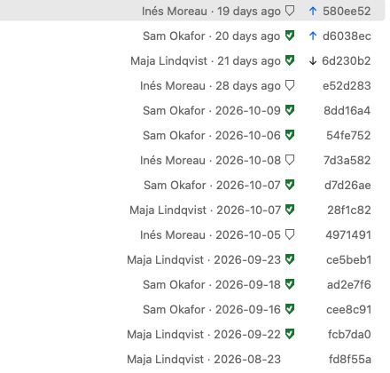
A branch's menu shows what it changed since it left yours, or what yours changed since it left it. Mark a commit in the graph and compare another with it, or give Compare With > Other any range, such as v1..v2.
Take a snapshot of the work tree with ⌘⇧N and compare against it later, to see what the last round of edits did without committing anything.
Hover a word to see where it is defined, and jump there with F12. Gittan finds it through the lexer's code tree, with no language server to set up.
List the symbols of the shown file with ⌘⌥O, or of the whole repository with ⌘⇧T, and type a few letters to get there.
With the gh CLI signed in, the status bar shows the branch's pull request and its checks, and the review comments appear under the lines they are about, as an AI review's findings do. The globe at the top right lists your pull requests across every repository; approve, ask for changes, comment or merge one from its menu.
Every submodule in a section of its own, with the new commits on its remote. Gittan asks again every five minutes without fetching, and updates, syncs or adds submodules from File > Submodules.
The Files page shows the tree of HEAD, and Browse Files… on a commit, a tag or a reflog entry the tree as it was then. Open a file from it, or save it.
The scripts of package.json, the targets of a Makefile, the commands of Cargo, Go, Python and Lazarus and .gittan/commands.toml become buttons on the Commands page, their output drawn as a terminal draws it.
Click a commit in the graph and the summary shows it against its parent, under a card with its message, author and age, and a way back to the working tree.
Build
Gittan is a Free Pascal application built with Lazarus. The editor (ATSynEdit), the highlighter (EControl), the lexers, MetaDarkStyle and LazInk are git submodules, so fetch them and register their packages with Lazarus before the first build.
Lazarus 5.0 with FPC 3.2.2 or later. On Linux also the GTK 3 headers: libgtk-3-dev on Debian and Ubuntu, gtk3-devel on Fedora. On macOS, the Xcode Command Line Tools.
git clone --recursive https://github.com/slicke/gittan.git
cd gittan
# Cloned without --recursive, or pulled a submodule change?
git submodule update --init --recursive
Lazarus has to know where the packages are. make deps registers each one with lazbuild --add-package-link and compiles it, in dependency order. Run it again after a submodule moves.
make deps # Windows: .\make.ps1 deps # Building from the Lazarus IDE? Rebuild it with the vendored ATSynEdit too: make ide
make # cocoa on macOS, gtk3 on Linux make run # Windows, where there is no make: .\make.ps1 .\make.ps1 run
/Applications/lazarus on macOS when it is not on PATH; make.ps1 looks in C:\lazarus and C:\fpcupdeluxe\lazarus.vendor/CudaText-lexers into lexlib/. A build from the Lazarus IDE does not: run make lexlib once.metadarkstyle.lpk and lazink.lpk too; every platform needs both, though only Windows uses the first.